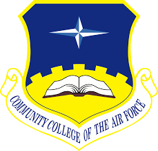

I received my certification as a Multi-Source Analyst in 2017. Shortly after, I moved to Hawaii and started the completion process for my Community College of the Air Force (CCAF), Associates degree in Intelligence Studies and Technology. I completed my CCAF while deployed in Qatar and then began working on my Bachelors in Psychology and minor in Criminal Justice at the University of Maryland Global Campus. I have currently applied to attend the University of South Florida in Tampa to complete my Bachelors. I hope to start the spring semester there. Now I am working on being a certified Web Developer in JavaScript.

Careers
During my active duty service I was an Intelligence Analyst that specialized in briefing and research. I worked to fuze all different types of intelligence disciplines and convey the information to our leaders. As I stated before I have a strong interest in beauty and fashion. On my free time I decided to get a part time job at Sephora. It was very challenging to balance Monday through Friday work and then work on the weekend but I love makeup. I did it for the holidays and decided to resign. I am currently working on attaining my certification as Web Developer to have a job in the IT world. Once I finally report to my reserve unit in Homestead I will be working a USSOUTHCOM mission. In the future I will be finishing my degree in hopes of applying for the FBI and working as a Forensic Psychologist.